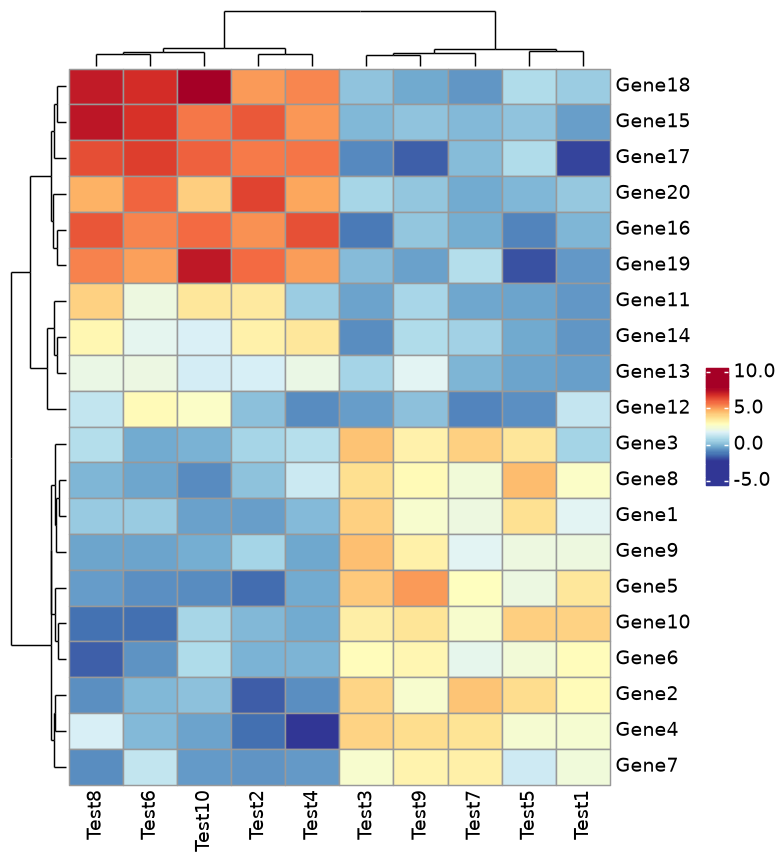
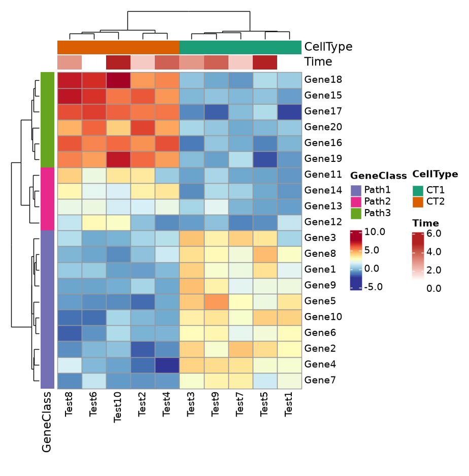
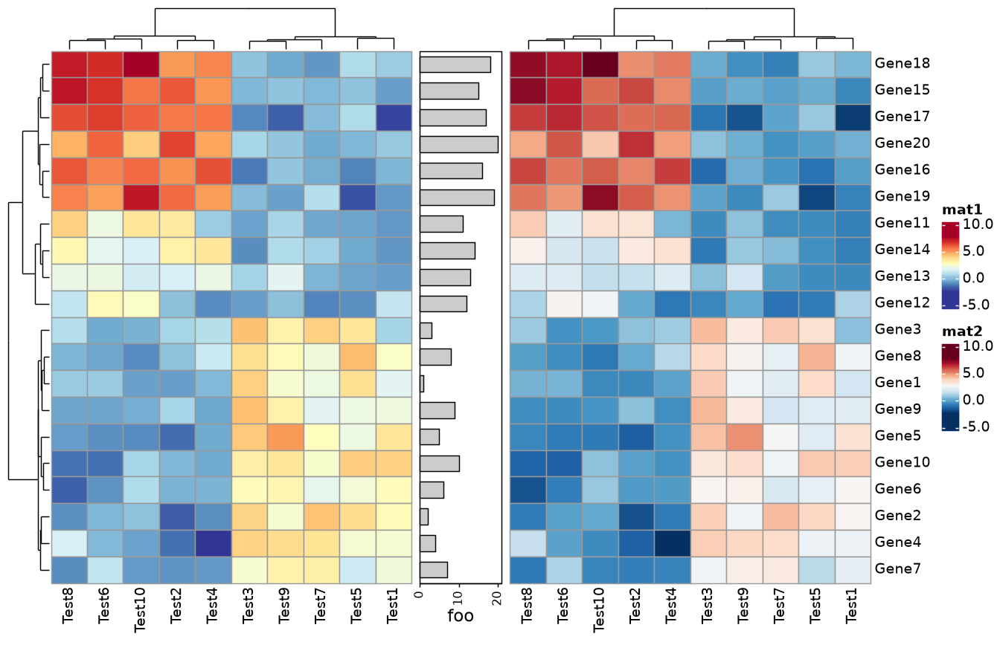
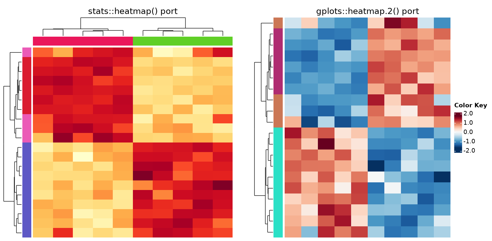
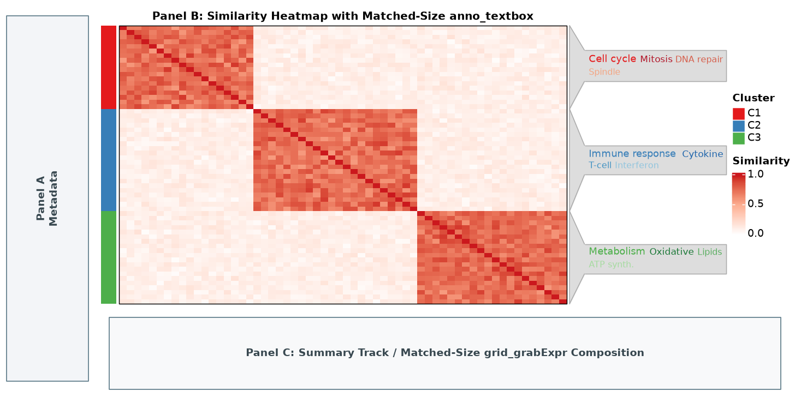
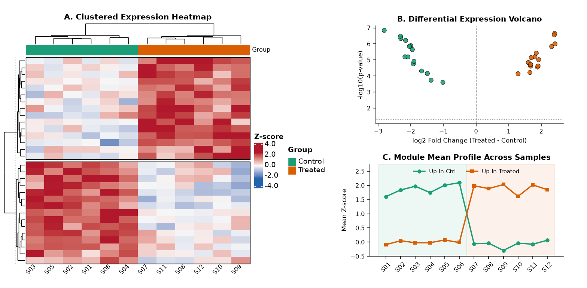
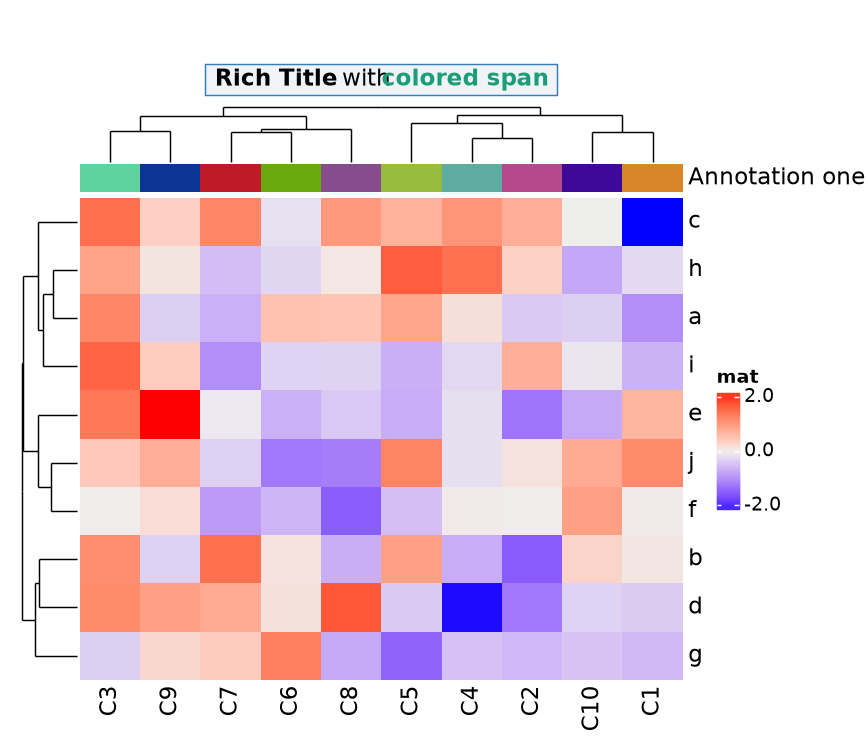
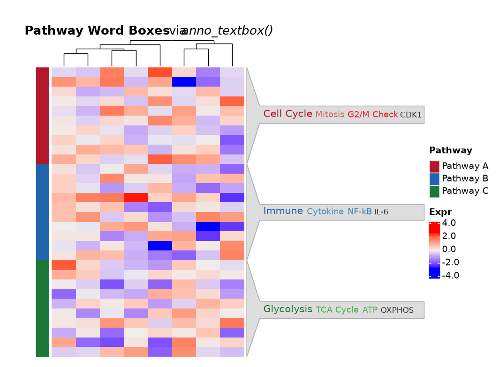

10 Integrate with other packages#
10.1 pheatmap, heatmap, and heatmap.2#
pheatmap is a popular R package for creating
annotated heatmaps, and many parameters in
ComplexHeatmap share its naming conventions.
ComplexHeatmap-py provides ch.pheatmap(),
which translates pheatmap::pheatmap() arguments directly
into a Heatmap object. Because it returns a standard
Heatmap, you can combine converted pheatmaps with
additional heatmaps and ch.rowAnnotation() tracks using
+ or %v%.
In ComplexHeatmap-py, ch.pheatmap()
also supports color as either a long palette vector (such
as 50 or 100 colors) or a shorter list of anchor colors (which
colorRamp2() interpolates automatically), and adds
run_draw=False so you can either compose the returned
Heatmap or render immediately (run_draw=True
or filename="out.png"). Note: pass color=...
(not col=...) to ch.pheatmap().
10.1.1 Examples#
First construct the classic 20x10 pheatmap example
matrix:
import complexheatmap as ch
import numpy as np
import pandas as pd
rng = np.random.default_rng(123)
arr = rng.standard_normal((20, 10))
arr[:10, ::2] += 3.0
arr[10:, 1::2] += 2.0
arr[14:, 1::2] += 4.0
test = pd.DataFrame(
arr,
index=[f"Gene{i + 1}" for i in range(20)],
columns=[f"Test{j + 1}" for j in range(10)],
)Calling ch.pheatmap(test) and drawing it produces the
familiar pheatmap layout with ComplexHeatmap styling:
ch.draw(ch.pheatmap(test))
Column and row annotations (annotation_col,
annotation_row) and custom annotation_colors
follow the same structure as R pheatmap, using Python
pandas.DataFrame objects and nested dict
palettes:
annotation_col = pd.DataFrame(
{"CellType": ["CT1", "CT2"] * 5, "Time": [1, 2, 3, 4, 5] * 2},
index=test.columns,
)
annotation_row = pd.DataFrame(
{"GeneClass": ["Path1"] * 10 + ["Path2"] * 4 + ["Path3"] * 6},
index=test.index,
)
ann_colors = {
"Time": ["white", "firebrick"],
"CellType": {"CT1": "#1B9E77", "CT2": "#D95F02"},
"GeneClass": {"Path1": "#7570B3", "Path2": "#E7298A", "Path3": "#66A61E"},
}
ch.draw(
ch.pheatmap(
test,
annotation_col=annotation_col,
annotation_row=annotation_row,
annotation_colors=ann_colors,
)
)
Because ch.pheatmap() returns a Heatmap,
you can concatenate multiple converted pheatmaps and ComplexHeatmap
annotations horizontally:
p1 = ch.pheatmap(test, name="mat1")
p2 = ch.rowAnnotation(
foo=ch.anno_barplot(np.arange(1, len(test) + 1), width=ch.unit(2, "cm"))
)
p3 = ch.pheatmap(
test,
name="mat2",
color=ch.hcl_colors(50, "RdBu", rev=True),
)
ch.draw(p1 + p2 + p3)
By default, row annotation legends are grouped with the heatmap
legend; pass legend_grouping="original" in
ch.draw() to separate annotation legends from heatmap
legends (see Legends):
p = ch.pheatmap(
test,
annotation_col=annotation_col,
annotation_row=annotation_row,
annotation_colors=ann_colors,
)
ch.draw(p, legend_grouping="original")
10.1.2 Translation#
The table below maps pheatmap parameters to their direct
ComplexHeatmap-py Heatmap()
equivalents:
ch.pheatmap() argument |
Equivalent in
ch.Heatmap() |
|---|---|
mat |
matrix
(np.ndarray or pd.DataFrame) |
color |
col: pass a
ch.colorRamp2() function or a sequence of colors to
interpolate |
kmeans_k |
row_km |
breaks |
Passed as breaks to
ch.colorRamp2(breaks, colors) |
border_color |
rect_gp=ch.gpar(col=border_color)
(and gp=ch.gpar(col=...) in annotations) |
cellwidth |
width=ch.unit(cellwidth * ncol * 25.4 / 72.0, "mm") |
cellheight |
height=ch.unit(cellheight * nrow * 25.4 / 72.0, "mm") |
scale |
Standardize rows/columns on
mat before passing to ch.Heatmap() |
cluster_rows /
cluster_cols |
cluster_rows /
cluster_columns |
clustering_distance_rows /
..._cols |
clustering_distance_rows /
..._columns ("correlation" becomes
"pearson") |
clustering_method |
clustering_method_rows /
clustering_method_columns |
cutree_rows /
cutree_cols |
row_split /
column_split (integer k with clustering
enabled) |
treeheight_row /
treeheight_col |
row_dend_width /
column_dend_height (or show_row_dend=False
when 0) |
legend |
show_heatmap_legend |
legend_breaks /
legend_labels |
heatmap_legend_param={"at": ..., "labels": ...} |
annotation_row /
annotation_col |
left_annotation=ch.rowAnnotation(df=...)
/ top_annotation=ch.HeatmapAnnotation(df=...) |
annotation_colors |
col dictionary inside
HeatmapAnnotation() / rowAnnotation() |
annotation_legend |
show_legend inside
HeatmapAnnotation() / rowAnnotation() |
annotation_names_row /
..._col |
show_annotation_name inside
rowAnnotation() / HeatmapAnnotation() |
show_rownames /
show_colnames |
show_row_names /
show_column_names |
main |
column_title |
fontsize_row /
fontsize_col |
row_names_gp=ch.gpar(fontsize=...)
/ column_names_gp=ch.gpar(fontsize=...) |
angle_col |
column_names_rot |
display_numbers,
number_format, number_color,
fontsize_number |
cell_fun or vectorized
layer_fun using ch.pindex(mat, i, j) and
ch.grid_text() |
gaps_row /
gaps_col |
row_split /
column_split (ordered categorical factor when clustering is
False) |
labels_row /
labels_col |
row_labels /
column_labels |
na_col |
na_col |
10.1.3 Comparisons and legacy wrappers#
ComplexHeatmap-py also exposes
ch.compare_pheatmap(), ch.heatmap(),
ch.compare_heatmap(), ch.heatmap_2(), and
ch.compare_heatmap_2() so existing pheatmap, R
stats::heatmap, and gplots::heatmap.2 calls
translate seamlessly to Heatmap objects. Here are four
common pheatmap configurations rendered with
ch.compare_pheatmap():
star_mat = np.where(test.to_numpy() > 4.5, "*", "")
ch.compare_pheatmap(test, scale="row", clustering_distance_rows="correlation")
ch.compare_pheatmap(test, display_numbers=True, number_format="{:.1f}", fontsize_number=7)
ch.compare_pheatmap(test, annotation_col=annotation_col, cluster_rows=False, gaps_row=[10, 14], cutree_cols=2)
ch.compare_pheatmap(test, display_numbers=star_mat, angle_col=45, annotation_colors=ann_colors, annotation_col=annotation_col)
And similarly for ch.compare_heatmap()
(stats::heatmap translation) and
ch.compare_heatmap_2() (gplots::heatmap.2
translation):
row_side = ["#1B9E77"] * 10 + ["#D95F02"] * 4 + ["#7570B3"] * 6
col_side = ["#E7298A", "#66A61E"] * 5
ch.compare_heatmap(test, RowSideColors=row_side, ColSideColors=col_side, main="stats::heatmap() port")
ch.compare_heatmap_2(test, scale="row", dendrogram="row", RowSideColors=row_side, main="gplots::heatmap.2() port")
10.2 Multi-panel layout composition#
In R, packages such as cowplot and
multipanelfigure combine ComplexHeatmap
figures with other plots by capturing heatmaps as grobs via
grid::grid.grabExpr(). In
ComplexHeatmap-py, the exact counterpart is
ch.grid_grabExpr(), and because every graphics device is
backed by a Matplotlib Figure (dev.fig), you
can also place native Matplotlib Axes alongside captured
heatmaps.
10.2.1 Capturing heatmaps with
grid_grabExpr#
When capturing a heatmap with
ch.grid_grabExpr(fn, width_in=..., height_in=...), keep a
key detail in mind for annotations whose geometry is resolved against
the active device size at draw time:
anno_zoom()/anno_link()andanno_textbox()(ribbon connections and aligned boxes)anno_mark()(smart non-overlapping label positions)- Wrapped multi-column legends
If you capture a heatmap at the default 8 x 8 inches and
later draw that CapturedGrob into a panel with a very
different aspect ratio or size, device-sized annotations can shift
relative to their target slices. Always pass the target panel’s
actual width_in and height_in to
ch.grid_grabExpr() so layout calculation and final
rendering happen at matching dimensions:
fig_w, fig_h = 10.4, 5.2
p2_w = fig_w * 0.88 # panel B occupies 88% width
p2_h = fig_h * 0.78 # panel B occupies 78% height
g_hm = ch.grid_grabExpr(ht_clusters, width_in=p2_w, height_in=p2_h)
dev = ch.grid_newpage(width_in=fig_w, height_in=fig_h, dpi=140)
ch.pushViewport(ch.viewport(x=0.12, y=1.0, width=0.88, height=0.78, just=("left", "top")))
ch.grid_draw(g_hm)
ch.popViewport()
10.2.2 Combining ComplexHeatmap-py with Matplotlib Axes#
HeatmapList.draw() computes its 7x7 outer layout against
the full GridDevice dimensions (dev.width_mm,
dev.height_mm). Therefore, when combining a
ComplexHeatmap-py heatmap with standard Matplotlib
Axes on the same Figure:
- Capture the heatmap into a
CapturedGrobsized for its sub-panel (width_in = total_w * frac_w,height_in = total_h * frac_h) usingch.grid_grabExpr(). - Open a fresh canvas with
dev = ch.grid_newpage(width_in=total_w, height_in=total_h, dpi=140). - Replay the
CapturedGrobinside its dedicatedch.viewport()on the left (x=0.0, width=frac_w), and add standard MatplotlibAxeson the right viadev.fig.add_axes([...]):
g_ht = ch.grid_grabExpr(
lambda: ch.draw(ht_left, newpage=False),
width_in=11.2 * 0.56,
height_in=5.3,
)
dev = ch.grid_newpage(width_in=11.2, height_in=5.5, dpi=140)
ch.pushViewport(ch.viewport(x=0.0, y=0.5, width=0.56, height=0.96, just=("left", "center")))
ch.grid_draw(g_ht)
ch.popViewport()
ax1 = dev.fig.add_axes([0.64, 0.57, 0.32, 0.34])
ax1.scatter(log2fc, neg_log10_p, c=colors_pts, s=36, edgecolors="black", linewidths=0.5)
ax1.set_title("B. Differential Expression Volcano")
ax2 = dev.fig.add_axes([0.64, 0.11, 0.32, 0.32])
ax2.plot(x_s, mean_ctrl, marker="o", color="#1B9E77", label="Up in Ctrl")
ax2.plot(x_s, mean_trt, marker="s", color="#D95F02", label="Up in Treated")
ax2.set_title("C. Module Mean Profile Across Samples")
10.3 Rich text with gt_render#
ComplexHeatmap-py provides
ch.gt_render() as the Python counterpart to R’s
gridtext integration, allowing inline styling of
titles, dimension names, anno_text(), and legend titles
without external dependencies.
ch.gt_render() parses the following inline markup:
**bold**for bold text*italic*for italic text<br>/<br/>for line breaks<span style='color:...; font-size:...pt; font-weight:bold'>...</span>for inline colors, font sizes, and bolding
Box styling options can be passed either through the companion
*_gp parameter using the box_ prefix
(box_fill, box_col, box_lwd) or
directly via gp= inside ch.gt_render(), along
with r= (corner radius) and padding=
([top, right, bottom, left]):
ch.gt_render("foo", r=ch.unit(2, "pt"), padding=ch.unit([2, 2, 2, 2], "pt"))10.3.1 Titles#
Using inline <span style='...'>,
**bold**, *italic*, <br>,
and column_title_gp=ch.gpar(box_fill="orange") (adding
extra TITLE_PADDING via ch.ht_opt.local() when
a multi-line title needs vertical clearance above the dendrogram):
rng = np.random.default_rng(123)
mat = pd.DataFrame(rng.standard_normal((10, 10)), index=list("abcdefghij"), columns=[f"C{j + 1}" for j in range(10)])
with ch.ht_opt.local(TITLE_PADDING=ch.unit([26, 26], "pt")):
ch.draw(
ch.Heatmap(
mat,
name="mat",
column_title=ch.gt_render(
"Some <span style='color:blue'>blue text **in bold.**</span><br>"
"And *italics text.*<br>"
"And some <span style='font-size:15pt; color:black'>large</span> text.",
r=ch.unit(2, "pt"),
padding=ch.unit([3, 5, 3, 5], "pt"),
),
column_title_gp=ch.gpar(box_fill="orange"),
)
)
When splitting a heatmap (e.g., row_km=2), pass a Python
list of ch.gt_render() objects (one per
slice) so each slice gets its own rich-text title and
box_fill color:
ch.draw(
ch.Heatmap(
mat,
name="mat",
row_km=2,
row_title=[
ch.gt_render("**title1**", padding=ch.unit([2, 4, 2, 4], "pt")),
ch.gt_render("*title2*", padding=ch.unit([2, 4, 2, 4], "pt")),
],
row_title_gp=ch.gpar(box_fill=["yellow", "lightblue"]),
)
)
10.3.2 Row and column names#
Pass ch.gt_render(...) to row_labels and
column_labels to style individual dimension labels with
padding, borders, bolding, and italics:
ch.draw(
ch.Heatmap(
mat,
name="mat",
row_labels=ch.gt_render(list("abcdefghij"), padding=ch.unit([2, 10, 2, 10], "pt")),
row_names_gp=ch.gpar(box_col=["red", "green"] * 5),
column_labels=ch.gt_render(
[f"**C{j + 1}**" if j % 2 == 0 else f"*C{j + 1}*" for j in range(10)]
),
)
)
10.3.3 Styled titles with annotations#
Combine a boxed ch.gt_render() heatmap title with top
annotations cleanly (note that in the current
ComplexHeatmap-py implementation,
HeatmapAnnotation(..., annotation_label=...) converts
labels to plain strings, whereas column_title,
row_title, row_labels,
column_labels, anno_text(), and legend
title render GridText directly):
ha = ch.HeatmapAnnotation(
foo=list("abcdefghij"),
annotation_label="Annotation one",
show_legend=False,
)
with ch.ht_opt.local(TITLE_PADDING=ch.unit([14, 14], "pt")):
ch.draw(
ch.Heatmap(
mat,
name="mat",
top_annotation=ha,
column_title=ch.gt_render(
"**Rich Title** with <span style='color:#1B9E77'>**colored span**</span>",
padding=ch.unit([2, 5, 2, 5], "pt"),
),
column_title_gp=ch.gpar(box_fill="#F0F4F8", box_col="#377EB8"),
),
padding=ch.unit([4, 4, 4, 16], "mm"),
)
10.3.4 Text and textbox annotations#
ch.anno_text() supports
ch.gt_render(..., align_widths=True) so boxes of different
text widths align uniformly:
ch.draw(
ch.rowAnnotation(
foo=ch.anno_text(
ch.gt_render([c * 8 for c in "ABCDEFGHIJ"], align_widths=True, padding=ch.unit([1, 3, 1, 3], "pt")),
gp=ch.gpar(box_col="blue", box_lwd=2),
just="right",
location=ch.unit(1, "npc"),
)
)
+ ch.Heatmap(mat, name="mat")
)
For multi-phrase styled word clouds aligned to row groups, use
ch.anno_textbox() with per-word col and
fontsize columns in each group’s DataFrame
(see Heatmap Annotations):
ch.draw(
ch.Heatmap(
mat_big,
name="Expr",
cluster_rows=False,
show_row_names=False,
column_title=ch.gt_render("**Pathway Word Boxes** via *anno_textbox()*"),
left_annotation=ch.rowAnnotation(
Pathway=groups,
col={"Pathway": {"Pathway A": "#B2182B", "Pathway B": "#2166AC", "Pathway C": "#1B7837"}},
show_annotation_name=False,
),
right_annotation=ch.rowAnnotation(Summary=ch.anno_textbox(groups, tb_data)),
)
)
10.3.5 Legends#
Pass ch.gt_render() to
heatmap_legend_param["title"] together with
title_gp=ch.gpar(box_fill="grey") to style the heatmap
legend title (note that tick labels in Legend
currently coerce to plain strings):
ch.draw(
ch.Heatmap(
mat,
name="mat",
heatmap_legend_param={
"title": ch.gt_render(
"<span style='color:orange'>**Legend title**</span>",
padding=ch.unit([2, 4, 2, 4], "pt"),
),
"title_gp": ch.gpar(box_fill="grey"),
"at": [-3, 0, 3],
"labels": ["negative three", "zero", "positive three"],
},
)
)